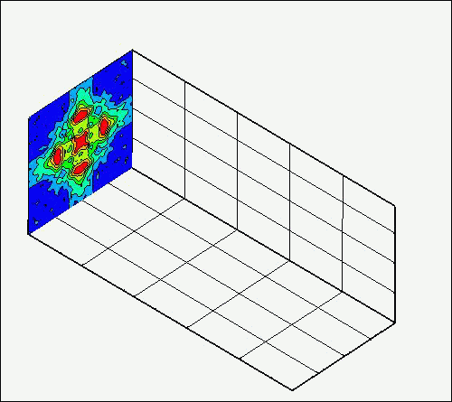

研究テーマ（Research）
-

関連論文 (クリックでダウンロード):
Sugwara et al., Quantitative flow visualization of slightly underexpanded microjets by Mach–Zehnder interferometers, Flow Turbule Combust 106(2021), pp.971-992. [PDFダウンロード] Sugawara et al., Three-dimensional reconstruction of a microjet with a Mach disk by Mach–Zehnder interferometers, J. Fluid Mech. 893(2020),A25 [PDFダウンロード] -

-

関連論文 (クリックでダウンロード):
Yoshimi et al., Near-field flow features of underexpanded microjets emerging from a rectangular convergent nozzle with a high-aspect-ratio, Flow Meas. Instrum. 106(2025), 102945. [PDFダウンロード] Sakashita et al., Quantitative flow visualization of underexpanded elliptic jets by rainbow schlieren tomography, Flow Turbule Combust (2025), pp. 1-22. [PDFダウンロード] -
広がり管内における不安定な衝撃波の挙動解析(新テーマ)
-
超音速噴流からのスクリーチ騒音のパッシブ制御（新テーマ）
-
白色光を用いたシングルショット位相シフト干渉計の開発（新テーマ）